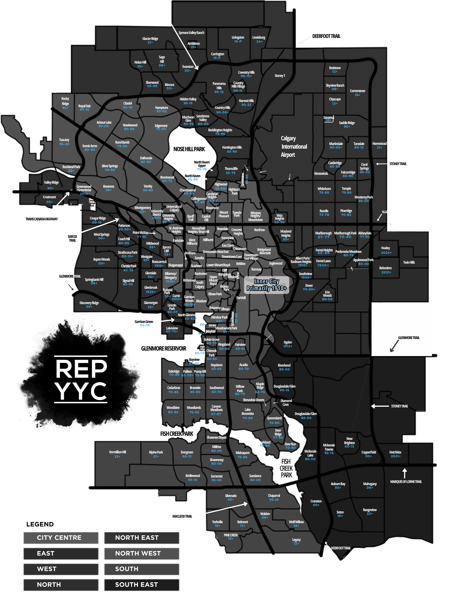

PPC adaptive
UTM, GCLID, keyword, and intent fields are captured into the form. Query strings can change the hero, CTA, and lead type.
CalgaryDuplexes.ca
A high-intent duplex desk for half duplex buyers, full duplex investors, suite-income searches, infill comparisons, and seller valuations across Calgary.
Funnels
UTM, GCLID, keyword, and intent fields are captured into the form. Query strings can change the hero, CTA, and lead type.
4,380 duplex export segments are mapped locally across 218 communities for future aggregate data.
The copy avoids invented listing counts, sold prices, guarantees, and fake reviews. It pushes visitors into a real shortlist or valuation workflow.
The same domain can test buyer search, investor analysis, suite-income intent, infill comparisons, and seller valuation traffic.
Start here
A useful Calgary duplex page should route you fast. Choose the job, then the site points you to the right workflow instead of making every visitor read the same page.
You need a shortlist that separates half duplex, full duplex, infill, suite potential, and practical family layouts before showings.
Build a buyer shortlistNeighbourhood intelligence
Send PPC to the exact intent page, then let the intake tell you which ad groups deserve budget: first home, suite income, investor, infill, quadrant, valuation, or full-duplex acquisition.
Explore neighbourhood logic
Community intent map
Altadore, Killarney/Glengarry, Richmond, Rosscarrock, Mount Pleasant, Capitol Hill
Builder quality, finish package, garage, basement, road exposureGlamorgan, Glenbrook, Lakeview, Signal Hill, Strathcona Park, West Springs
School fit, renovation age, detached alternatives, resale depthDover, Forest Lawn, Marlborough, Pineridge, Whitehorn, Falconridge
Suite status, tenant demand, mechanicals, parking, inspection scopeMahogany, Seton, Legacy, Belmont, Evanston, Sage Hill
Builder warranty, HOA fees, commute, detached price gapBowness, Montgomery, Ogden, Highland Park, Tuxedo Park, Renfrew
Rent roll, redevelopment optionality, land, utility separationUseful neighbourhood desk
These are not fake rankings. They are working buckets for ad tests, buyer shortlists, seller positioning, and Matrix export priority. Each card tells you why the area belongs in the duplex conversation and what can go wrong.
Inner-city half-duplex buyer
Infill comparison shopper
Move-up buyer
NW/inner-north infill buyer
Full-duplex or value-add investor
Land-value and rental-demand buyer
Practical west-side half-duplex buyer
Move-up or downsizing buyer
Property triage
Is it semi-detached half duplex, full duplex, row/townhouse, or marketing noise?
Fee simple, condo, tenant occupied, owner occupied, or two-side acquisition?
Registry, permits, egress, entrance, fire/smoke, insurance, and lender rent treatment.
Rent roll, lease terms, vacancy assumption, utilities, deposits, and tenant notice risk.
Roof, windows, foundation, drainage, shared wall, mechanicals, electrical, plumbing, insulation.
Who buys this later: owner-occupier, investor, builder, family, or suite-income buyer?
PPC lab
This is the practical ad plan: one intent, one landing page, one conversion action. It keeps spend from smearing across generic real estate clicks.
Shortlist request
Negative seed: Exclude rentals, definition-only, kijiji, free, plansSubtype clarity beats generic listing pages
Negative seed: Exclude apartment, fourplex, commercialDue diligence language filters better investor leads
Negative seed: Exclude triplex, apartment building if not wantedVerification-first copy improves lead quality
Negative seed: Exclude illegal suite guarantee, cashflow guaranteedCalculator users become higher-intent consults
Negative seed: Exclude wholesale, no money downBuyer-segment launch plan wins valuation leads
Negative seed: Exclude rent my duplex, property managerPPC conversion tool
Give investors something useful before they bounce. This is educational only, but it turns a cold click into a better conversation.
Matrix status
Matrix raw exports and aggregates were not present yet. The site is wired for the database, but no private MLS sold/listing data is published.
Start the duplex desk
Home traffic lands here with campaign fields preserved. Tell us what you want and the follow-up can match the exact search angle.
Source notes
Last reviewed June 11, 2026. Private Matrix exports are not published here until aggregate-only data is processed and reviewed.